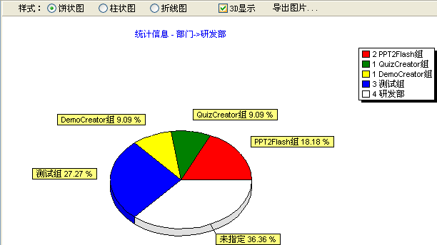
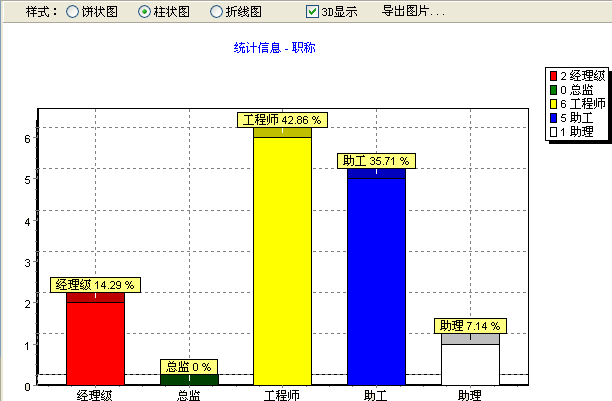

| 档案操作 - 图表 |
|
秋风人事档案管理系统支持员工档案的分布图表，您可以从菜单的[档案管理]->[图表分析]或者工具栏中的[图表]或者树信息右键中的[图表]菜单项来显示图表：  当您选择显示图表操作时，其它员工档案的操作如添加、编辑、删除、查询等将不再有用，快速查询仍然可用，它将使图表显示出您快速查询到的信息。您可以主界面左边的信息分类列表，则图表会显示对应信息。这里对图标操作的有几个功能：你可以选择图表显示的样式、是否以3D显示，以及可以导出当前的图表为bmp图片等。  您若要关闭图表显示，则可以再点点击[图表]功能，系统将回到显示员工信息列表的页面。 |